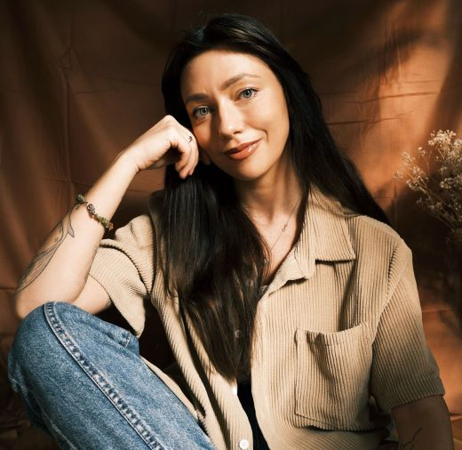

O mnie:
Ukończyłam 5-letnie studia magisterskie na kierunku psychologia ze specjalnością psychologia kliniczna i psychoterapia w Akademii Ekonomiczno - Humanistycznej w Warszawie. Obecnie uczę się w 4-letniej szkole psychoterapii Behawioralnie. Korzystam z podejścia Terapii Akceptacji i Zaangażowania (ACT), które opiera się na naukowo potwierdzonych metodach wspierających zmianę i budowanie elastyczności psychologicznej. W swojej pracy kieruję się wartościami takimi jak uważność, życzliwość i autentyczność. Nie skupiam się wyłącznie na redukcji objawów, wspieram także w odnajdywaniu nowych sposobów funkcjonowania, które pozwalają budować satysfakcjonujące życie, pomimo trudności. Prywatnie uwielbiam podróże, spędzanie czasu z bliskimi (zwłaszcza z moim psim synem Chrupkiem), chodzenie do kina i czytanie książek (najlepiej w hamaku, w lesie). Od wielu lat praktykuję jogę i bliska mi jest filozofia buddyjska, w myśl któtrej staram się żyć każdego dnia :)
Wykształcenie:
- Behawioralnie – Czteroletnia Szkoła Psychoterapii | Warszawa | 2025–2029
- Instytut Terapii Poznawczo-Behawioralnej – Roczny kurs interwencji kryzysowej | Online | 2023–2024
- Akademia Ekonomiczno-Humanistyczna - studia magisterskie, kierunek: psychologia, specjalność: psychologia kliniczna i psychoterapia | Warszawa | 2019–2024
Doświadczenie:
- Centrum Psychoterapii „Dwa Skrzydła” | Warszawa | 2023–2024 (staż)
- Ośrodek Pomocy Społecznej | Warszawa | 2022–2023 (wolontariat)
- Przedszkole „8 Kroków” | Warszawa | 2021–2022 (praktyki studenckie)
- Psychoterapia własna | Online | 2022 - obecnie
- Własna dzialalność gospodarcza | Warszawa | 2017–obecnie
Szkolenia, w których ostatnio brałam udział:
- 6 kroków do elastyczności z matrycą ACT, Benjamin Schoendorf
- Terapia ACT w zaburzeniach lękowych: Transformacja cierpienia w witalne życie, John Forsyth
- Aktywacja zachowania w leczeniu osób z depresją, Sona Dimidjan
- Psychoterapia oparta na analizie funkcjonalnej: Wprowadzenie do 5 zasad FAP, Matthew Menayas-Skinta
- O psychoterapeutycznej pracy z ciałem z osobami, które nie czują swojego ciała", Sabina Sadecka
- Terapia ACT dla zamartwiania się, ruminowania i obsesji, Russ Harris
- Żyć dobrze z chorobą fizyczną: jak ACT może pomóc przystosować się do zmieniającego się życia, Ray Owen